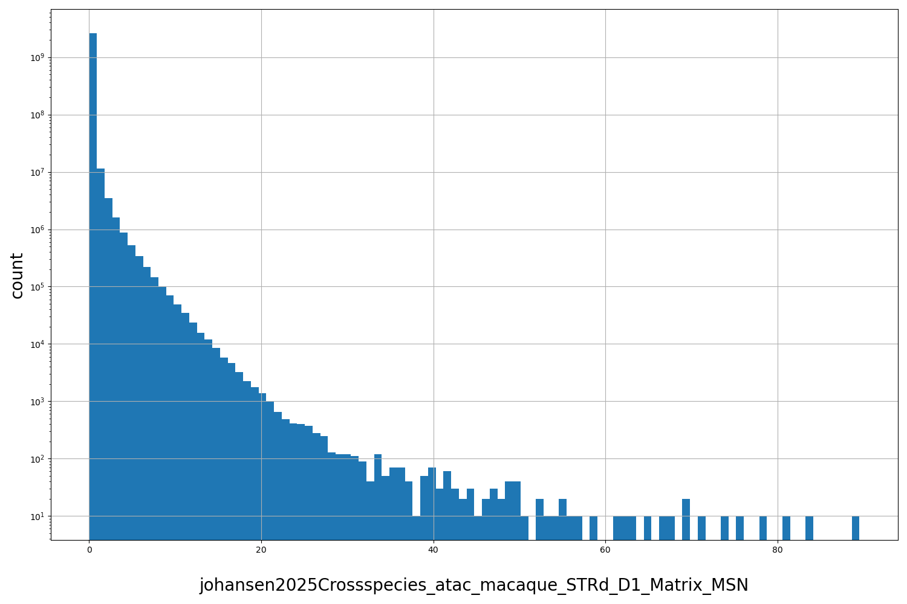

Resource
| Id | summary/johansen2025Crossspecies/pseudobulk_atac/macaque/STRd_D1_Matrix_MSN/bigwig |
|---|---|
| Type | position_score |
| Version | 0 |
| Summary |
ATAC big wig for STRd_D1_Matrix_MSN cell type from macaque
|
| Description | |
| Labels |
|
Scores (1)
| ID | Type | Default annotation | Description | Histogram | Range |
|---|---|---|---|---|---|
| johansen2025Crossspecies_atac_macaque_STRd_D1_Matrix_MSN | float |
johansen2025Crossspecies_atac_macaque_STRd_D1_Matrix_MSN |
RPKM?
|
 |
[0.00344, 89.5] |
Coverage
not computed
Files
| Filename | Size | md5 |
|---|---|---|
| STRd_D1_Matrix_MSN.bw | 1.37 GB | ff243a0a8697bb8d37b35497eaff6791 |
| genomic_resource.yaml | 909.0 B | 754a7c066047e6f161e1c2addeef3153 |
| statistics/ |